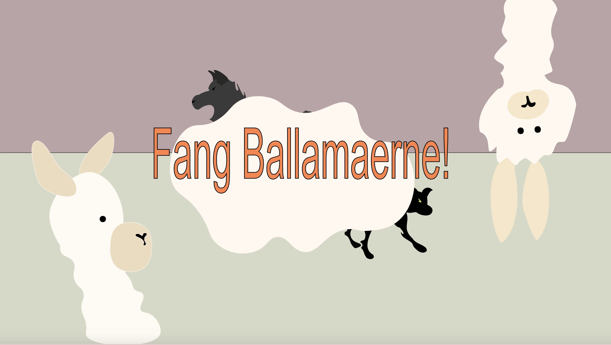

TEMA4 - Animation
Temaopgave

I Tema4 opbyggede vi et spil fra bunden i HTML, CSS og JS.
Dertil lavede et site, hvor designprocessen fremgår.
Under dette forløb har vi arbejdet med SVG, WAV og MP3 filer.
Stiftet bekendtskab til Javascript samt udarbejdet illustrationer i Adobe Illustrator. I Illustrator har jeg udarbejdet UI-design: spil-elementer, baggrundsdesign, atmosfærisk perspektiver, med fokus på linjer og kontraster.
Jeg har tillært viden om
skitseringsteknikker, idegenereringsteknikker og paperprototype, og har under Tema4 udviklet funktioner
i CSS og Javascript, hvor jeg har brugt metoder såsom addClass/removeClass, events (load, click,
animationend), betingelser (if-else) og math.random. Derudover har jeg udarbejdet
aktivitetsdiagram og statemachine diagram og udviklet ide og visuelt koncept ud fra skitsering og
inspiration fra genre og stil.
Det sværeste under dette forløb var Javascript: At få alle elementer til at
rykke sig, men også at implementere lyd på diverse elementer. Jeg havde problemer med at få startskærm til at virke og
titelskærme til at fjernes, når der klikkes på en knap samt indsætning af lyd, men lykkedes til sidst.
Se det færdige resultat i Temaopgave og eventuelt prøv mit spil under siden "spil" i min Temaopgave.